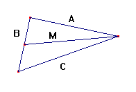
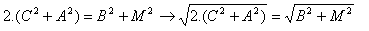
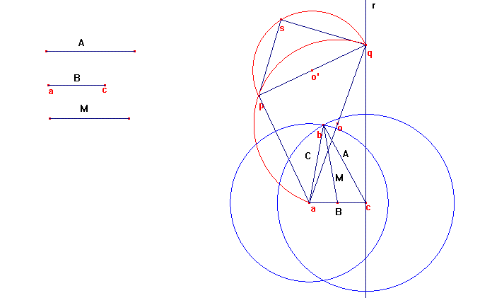

Problema 291:Construir un triángulo dados dos lados y la mediana relativa a uno de ellos.
Solución de : Correa PabloAriel.Profesor del Colegio del Centenario. Buenos Aires, Argentina.

Suponiendo que se tienen los lados B , A y la mediatriz M del lado B.
Teniendo en cuenta que el área del triangulo de lados (B/2, A, M) es igual al
área del triangulo de lados (B/2 , M ,C) y haciendo uso de la fórmula de
Herón, se llega, luego de desarrollar, a la siguiente expresión:

Construcción:
1-Partiendo de ac. Trazamos r perpendicular a ac en c.
2-Con centro en c y radio 2M trazamos una semicircunferencia que corta a r en q.
3-Con centro en o, punto medio de la hipotenusa aq, trazamos una
semicircunferencia de radio ao y llamamos p a la intersección de la
semicircunferencia con la mediatriz de qa. Se tiene el triángulo rectángulo
isósceles apq.
4-Con centro o',punto medio del cateto pq, trazamos una semicircunferencia de
radio o'q
5-Llamando s a la intersección de la semicircunferencia anterior y la
circunferencia de centro q y radio A.
Se tiene que ps=C ."La longitud buscada".
Por último, construimos la circunferencia de centro a y radio C cuya
intersección con la circunferencia de centro c y radio A determina el punto b.
Siendo el triángulo de vértices abc el pedido.
